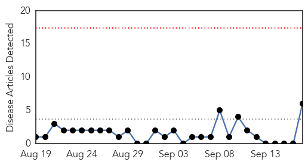
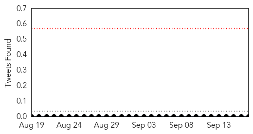
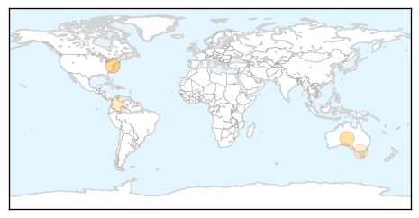
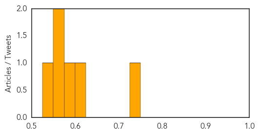
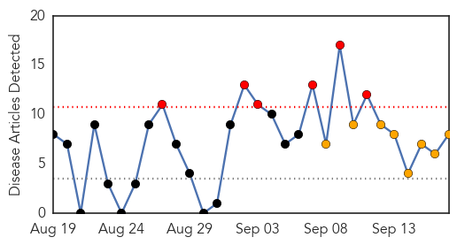
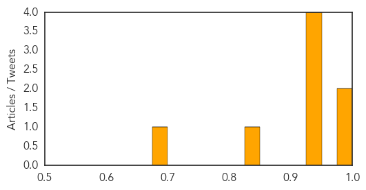

Hepatitis
30-Day Web Trend
0 alerts, 0 warnings

30-Day Twitter Trend
0 alerts, 0 warnings

Article Locations
Article Confidences
Top Articles:
- 0.744
- CDC picks D.C. for new campaign to step up HIV treatment
- 0.621
- Gilead gave voluntary licenses to Indian pharma companies to make genetic version of Sofosbuvir
- 0.585
- Medical Tourism
- 0.565
- Hepatitis C deaths on rise in Australia, syphilis makes comeback
- 0.563
- Declining condom use driving sexually-transmitted infections
- 0.525
- Cervical cancer virus plunges
Top Tweets:
-
No tweets found for Sep 17, 2014
Dengue Fever
30-Day Web Trend
6 alerts, 8 warnings

30-Day Twitter Trend
0 alerts, 0 warnings

Article Locations

Article Confidences
Top Articles:
- 0.988
- Dengue cases climb up in north Karnataka
- 0.980
- "Dengue's Cousin" Makes First Independent Appearance in Brazil
- 0.947
- Breeding grounds: Ferozewala, Muridke high-risk areas for dengue fever
- 0.942
- Another polio case plagues province
- 0.930
- Killer mosquito invasion reaches the UK as bugs travel to Britain from Europe
- 0.929
- Killer mosquito invasion reaches the UK as bugs travel to Britain from Europe
- 0.826
- MP for West Portland speaks on increase in symptoms of chikungunya in Portland
- 0.698
- Venezuela on alert over mysterious, deadly disease
Top Tweets:
- 0.658
- Flavivirus news: 13 dengue cases reported, doctors advise caution - Indian Express: 13 dengue c... http://t.co/jrtU2w1Zr2 pathogenposse